How to Create a PoC Application on OpenShift for Adding Loki Data Sources to Grafana
As a platform engineer, adding observability and monitoring capabilities is crucial for maintaining the health of your infrastructure and applications. One popular combination for log aggregation and visualization is Loki for logs and Grafana for dashboards. In this blog post, we'll walk through the steps to create a Proof of Concept (PoC) application on OpenShift and integrate Loki (both application and infrastructure) as a data source to Grafana.
EMOJIS >⌛✅ 💡💣💥🔥
Prerequisites
- OpenShift Cluster: Ensure you have access to an OpenShift cluster.
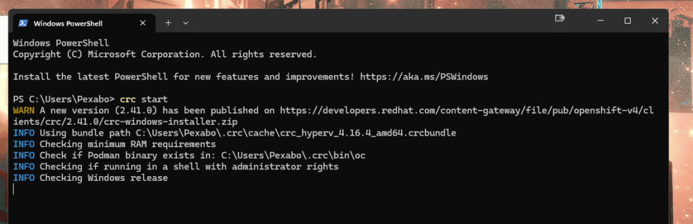
- OpenShift CLI (oc): Installed and configured to access the cluster.
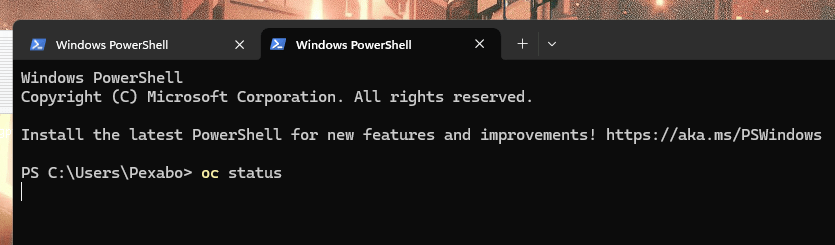
Waits and times out > faster second time!
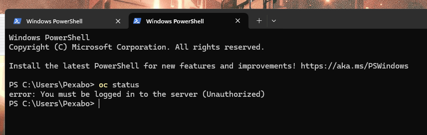
Turning on takes time even on 3995x
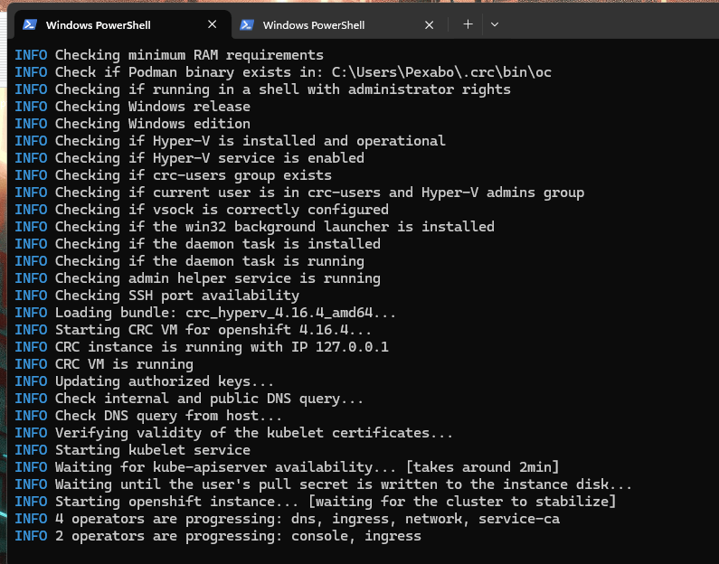
Now on written by the action and added the Get-Date as well to the combo
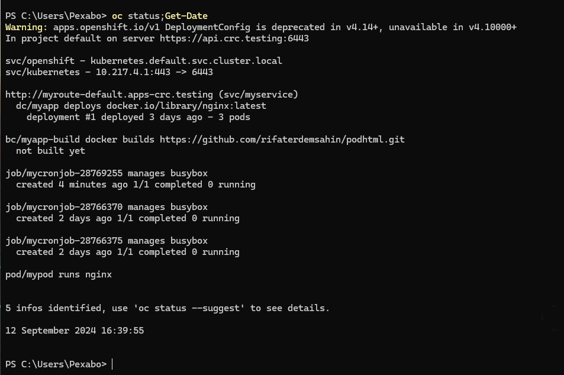
- Helm: Installed for deploying Loki.
Local Check
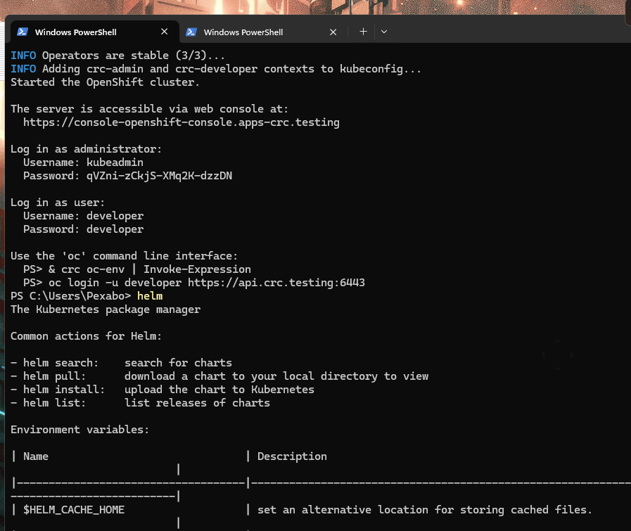
- Grafana: Version 5 or above.
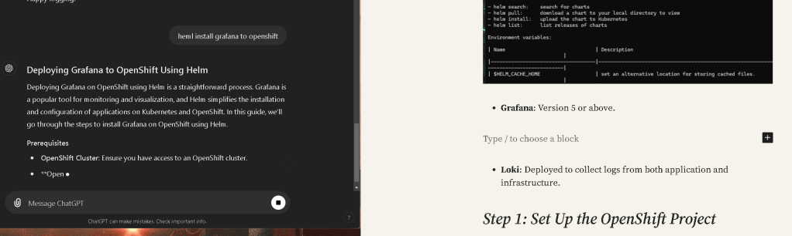
Deploying Grafana to OpenShift Using Helm
Deploying Grafana on OpenShift using Helm is a straightforward process. Grafana is a popular tool for monitoring and visualization, and Helm simplifies the installation and configuration of applications on Kubernetes and OpenShift. In this guide, we’ll go through the steps to install Grafana on OpenShift using Helm.
Prerequisites
-
OpenShift Cluster: Ensure you have access to an OpenShift cluster.
-
OpenShift CLI (oc): Installed and configured to access the OpenShift cluster.
-
Helm: Installed and configured for OpenShift. Helm helps manage Kubernetes applications efficiently.
Step 1: Create a New Project (Namespace) for Grafana
First, create a new project (namespace) in OpenShift where Grafana will be deployed.
oc new-project grafana
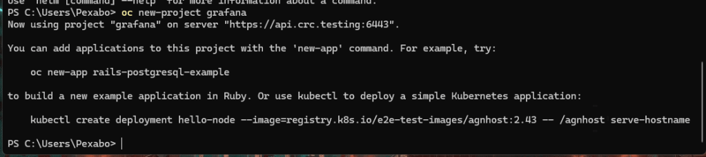
This keeps the Grafana deployment isolated and organized.
Step 2: Add the Helm Repository for Grafana
Helm repositories provide access to pre-configured applications like Grafana. First, we need to add the official Grafana Helm repository.
helm repo add grafana https://grafana.github.io/helm-charts
helm repo update
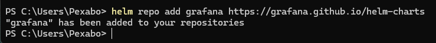
This ensures that you have the latest version of the Grafana Helm chart.
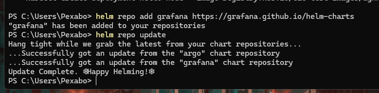
🔥🔥🔥🔥🔥🔥🔥🔥🔥🔥
move compute back to mac and crc setup is there > monolith coming down
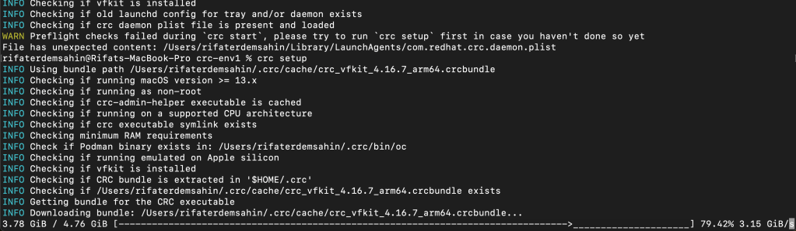
Step 3: Create the Required Permissions for Grafana
Since Grafana might need to access OpenShift resources (e.g., Prometheus, Loki), we need to assign it the necessary permissions. Create a service account and assign the appropriate roles:
oc create serviceaccount grafana -n grafana
oc adm policy add-cluster-role-to-user cluster-monitoring-view -z grafana -n grafana
This allows Grafana to view monitoring data, which may be essential when integrating with Prometheus.
Step 4: Install Grafana Using Helm
Now, you can install Grafana using Helm. You can configure some default parameters like admin password, storage, and more using Helm values.
Here's a simple Helm install command to get Grafana running on OpenShift:
helm install grafana grafana/grafana --namespace grafana \
--set serviceAccount.name=grafana \
--set persistence.enabled=true \
--set adminPassword='your-secure-password'
This command:
-
Installs Grafana into the
grafananamespace. -
Sets the service account to
grafana, which has the necessary permissions. -
Enables persistent storage for Grafana (you can configure storage further if needed).
-
Sets an admin password for Grafana (
your-secure-password).
Step 5: Expose Grafana on OpenShift
By default, Grafana runs inside the OpenShift cluster and may not be accessible externally. You can expose it using an OpenShift route:
oc expose svc grafana -n grafana
Get the route URL by running:
oc get route grafana -n grafana
This URL will give you access to Grafana through the OpenShift router.
Step 6: Access Grafana
Once the route is created, you can access Grafana using the route URL from the previous step. Open a web browser and navigate to the URL. You should see the Grafana login page.
Use the default username (admin) and the password you set during the Helm installation (your-secure-password).
Step 7: Configure Grafana (Optional)
Once Grafana is installed, you can configure it to add data sources (Prometheus, Loki, etc.), set up dashboards, and more. These configurations can also be done using the Grafana UI.
If you're integrating with Prometheus, you can add it as a data source:
-
Navigate to Configuration > Data Sources.
-
Click Add data source.
-
Select Prometheus and enter the Prometheus URL (you can get this by running
oc get svcfor Prometheus). -
Save the configuration.
Step 8: Upgrade and Manage Grafana
If you need to upgrade Grafana in the future or change configuration values, you can use Helm to upgrade the release:
helm upgrade grafana grafana/grafana --namespace grafana \
--set adminPassword='new-secure-password'
This will upgrade Grafana and apply any new configurations.
Conclusion
You've successfully deployed Grafana to OpenShift using Helm! This setup allows you to monitor your OpenShift cluster and applications using Grafana's powerful dashboards and plugins. You can now add various data sources and configure alerts to get the most out of Grafana.
Happy monitoring!
-
Loki: Deployed to collect logs from both application and infrastructure.
Step 1: Set Up the OpenShift Project
First, create a new OpenShift project (namespace) where your PoC application and monitoring components will be deployed.
oc new-project monitoring-poc
This isolates your resources and provides a clean environment for your proof of concept.
Step 2: Deploy Loki using Helm
Loki is the log aggregation tool we’ll use. To simplify deployment, we can use Helm to deploy Loki within our OpenShift cluster.
Add the Loki Helm repository:
helm repo add grafana https://grafana.github.io/helm-charts
helm repo update
Now, deploy Loki:
helm install loki grafana/loki-stack --namespace monitoring-poc
This command installs Loki, which includes both Promtail (for log scraping) and Grafana, along with their dependencies.
Step 3: Deploy Grafana v5
Grafana v5 can be deployed using either OpenShift templates or Helm. Since Helm simplifies dependency management, we’ll use it for Grafana deployment.
Install Grafana using Helm:
helm install grafana grafana/grafana --namespace monitoring-poc
Ensure that Grafana is deployed successfully by checking the pods:
oc get pods -n monitoring-poc
Step 4: Configure Loki Data Sources in Grafana
Once Grafana and Loki are up and running, the next step is to integrate Loki as a data source.
Access the Grafana UI by forwarding the Grafana service to your local machine:
oc port-forward service/grafana 3000:80 -n monitoring-poc
Navigate to http://localhost:3000 in your browser and log in (default credentials are admin/admin).
Next, add the Loki data source for both application and infrastructure logs:
-
In Grafana, go to Configuration > Data Sources.
-
Click Add data source, then select Loki.
-
For the URL, use the internal Loki service:
http://loki:3100
-
Set up two different data sources, one for application logs and one for infrastructure logs, by adjusting labels and log paths in the Loki queries.
-
Save and test the data source.
Step 5: Create Dashboards
Once the Loki data sources are added, create Grafana dashboards to visualize the application and infrastructure logs.
-
Go to Create > Dashboard in Grafana.
-
Add a panel and choose your Loki data source.
-
Use the log query field to filter specific logs (e.g., by namespace, pod name, or labels).
-
Save the dashboard for future reference.
Step 6: Validate the PoC
Generate logs in your application and infrastructure, and validate that Loki is correctly collecting and storing them, and that Grafana is displaying them properly. You can use the following command to tail logs in OpenShift:
oc logs -f
Check that the logs appear in Grafana, confirming that the Loki data sources are functioning as expected.
Conclusion
By following these steps, you've successfully set up a PoC application on OpenShift, deployed Loki and Grafana v5, and integrated both application and infrastructure logs into Grafana using Loki as the data source. This setup gives you the power to monitor and visualize logs from different sources in a single interface, ensuring better observability of your platform.
Happy logging!
Imported from rifaterdemsahin.com · 2024